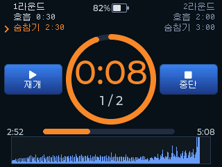
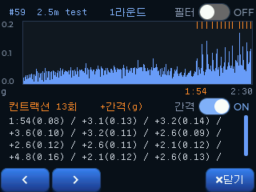

Equalscope
Equalscope이퀄라이징부터 호흡 훈련까지,
하나로.
이퀄라이징 압력은 실시간으로 측정·분석하고, 무엇을 고칠지 알려 줍니다.
CO₂·O₂ 테이블은 음성 안내에 따라 훈련하고 기록합니다.
스마트폰도, 앱도 없이. 이 한 대로.
※ 지상 드라이 트레이닝 전용 비방수 훈련 보조 장비이며, 의료기기가 아닙니다.

물에 가는 날은 생각보다 많지 않습니다.
실력은 물에서만 늘지 않습니다. 지상에서 하는 훈련은 크게 둘 — 이퀄라이징과 호흡 훈련입니다. 그런데 이퀄라이징은 잘 되고 있는지 볼 방법이 없어 감각에 맡겨야 했고, 호흡 훈련은 앱을 켤 스마트폰을 따로 챙겨야 했습니다.
Equalscope는 두 훈련을 한 대에 담았습니다. 켜서 모드만 고르면 됩니다.
두 가지 훈련, 장비 하나
전원을 켤 때 모드를 고릅니다. 이퀄라이징을 측정할지, 호흡 훈련을 시작할지 —
두 훈련 모두 측정부터 기록·분석까지 장비 안에서 끝납니다.

이퀄라이징 훈련
보이지 않던 압력을 초당 40회 실시간 그래프로. 훈련이 끝나면 반복 횟수·리듬·속도를 요약하고 기술 유형까지 자동 분석합니다. 잘된 기록은 참조 그래프로 겹쳐 보고, 현재 기록과 비교 분석까지 해 줍니다.

호흡 훈련 (CO₂ · O₂)
CO₂ 테이블과 O₂ 테이블을 따라 숨참기와 회복 호흡을 반복합니다. 영어 음성 안내가 구간과 남은 시간을 알려 주어 눈을 감고도 훈련할 수 있고, 모든 라운드가 기록으로 남습니다.
이퀄 툴과 스마트폰을 따로 챙길 필요 없이, Equalscope 하나만 가방에 넣으면 됩니다.
펌웨어 업데이트로 호흡 훈련이 더해졌듯, 프리다이버와 함께 성장하는 제품을 만들겠다는 처음의 약속은 변하지 않습니다.
장비 하나로 끝나는 훈련 사이클
스마트폰·PC 연결 없이, 켜자마자 바로. 이퀄라이징의 측정·분석·비교부터
CO₂·O₂ 훈련의 음성 안내·기록까지 장비 하나에서 끝납니다.
스마트폰 없이 단독 동작
앱 실행, 블루투스 연결, 화면 잠금, 알림 같은 변수 없이 수업 흐름이 끊기지 않습니다. 켜면 바로 측정.
초당 40회, 부드러운 실시간 그래프
40Hz 고속 측정으로 끊김 없이 매끄럽게. 장비가 직접 측정·표시하므로 통신 지연 없이 부드럽게 이어집니다.
훈련 후 자동 분석·조언
반복 횟수·주기·상승/하강 속도·정점 유지 시간을 요약하고, 압력 패턴으로 기술 유형을 추정합니다.
수축(컨트랙션)도 측정합니다
숨을 오래 참으면 배가 저절로 움찔거립니다. 처음 언제 왔는지, 간격은 어떤지,
몇 번 왔는지, 얼마나 셌는지 —
그동안은 옆에서 누가 세어 주지 않으면 알 수 없던 숫자였습니다.

배 위에 올려놓기만
누워서 배 위에 그냥 올려놓으면 됩니다. 벨트도, 센서를 붙이는 일도 없습니다. 훈련 중에는 배의 흔들림이 화면 아래에 실시간으로 그려집니다.

끝나면 숫자로
라운드 요약에 횟수 · 처음 온 시각 · 평균 간격이 남고, 그래프를 열면 수축 하나하나의 시각과 세기가 차례로 나옵니다.
처음 수축까지 걸린 시간은 CO₂ 내성을 보는 지표입니다. 그리고 평균만 남기지 않습니다 —
수축마다 시각과 세기가 다 나오므로, 간격이 뒤로 갈수록 좁아지는지를 그대로 읽을 수 있습니다.
기존 훈련 장비에는 없던 기능이며, 펌웨어 업데이트로 더해집니다 — 이미 쓰고 계신 분도 그대로 쓸 수 있습니다.
※ 심장 박동이 아니라 그 위로 뚜렷하게 솟은 움직임만 셉니다. 사람마다 배 움직임이 달라 기준은 그 판에서 직접 잡습니다.
화면 하나에 다 담았습니다
2.8인치 터치 화면에서 실시간 그래프, 분석, 파일 관리까지. 손가락으로 줌·스와이프하며 그래프를 자유롭게 봅니다.


주요 기능
레벨별로 골라 쓰는 기능들 — 지금 필요한 것만 쓰다가, 실력이 늘면 나머지가 차례로 쓰입니다.
대부분이 기존 훈련 장비에는 없던 기능입니다.
실시간 압력 그래프
초당 40회 측정으로 끊김 없는 부드러운 곡선. 장비가 직접 측정하고 그리기 때문에 지연 없이, 빠른 이퀄 반복도 놓치지 않습니다.
자동 분석 · 조언기존 장비에 없던
측정이 끝나면 반복 횟수·주기·속도를 요약하고, 압력 패턴으로 기술 유형까지 추정합니다. 감각이 아닌 숫자로 훈련을 돌아봅니다.
참조 그래프 비교기존 장비에 없던
잘된 기록을 참조 그래프로 등록하면 실시간 화면에 겹쳐 보입니다. 눈으로 보는 데서 그치지 않고, 참조와 현재 기록을 비교 분석까지 해 줍니다. 강사의 좋은 기록과 비교해 보거나, 예전 내 기록과 지금이 무엇이 달라졌는지 알 수 있습니다.
모든 훈련이 기록으로
측정이 끝나면 자동으로 파일 저장 — 훈련이 쌓여 나만의 데이터가 됩니다. PC로 옮겨 엑셀·구글 시트에서 열면, 그래프를 그리거나 수치를 정리하는 등 원하는 방식으로 다시 분석할 수 있습니다.
3점 터치 스크린샷기존 장비에 없던
세 손가락으로 화면을 터치하면 보이는 그대로 이미지 저장 — 교육생 피드백, 기록 공유 자료로 바로 씁니다.
SD 카드 펌웨어 업데이트기존 장비에 없던
SD 카드에 파일만 넣고 켜면 자동 업데이트. PC 프로그램도, 앱도 필요 없이 — 구매 후에도 새 기능이 계속 추가됩니다.
최고/최저 압력 알람기존 장비에 없던
설정 범위를 벗어나면 소리로 알림 — 화면을 계속 보지 않아도 됩니다.
EQ 인터벌기존 장비에 없던
구간별로 (간격 × 횟수) 알람 시퀀스를 설계 — "2초×5번, 4초×5번…" 식으로 하강에 맞춘 이퀄 리듬을 훈련. 알람 시점이 그래프에 마커로 남아 계획 대비 실제를 비교합니다.

압력 조절 밸브 (눈금)기존 장비에 없던
눈금이 있는 압력 조절 다이얼. 자주 쓰는 설정값을 정확히 반복할 수 있습니다. 입 안 공기가 줄어드는 수심을 지상에서 시뮬레이션(특히 마우스필).
멀티 테마 · 한국어/영어기존 장비에 없던
7가지 색상 테마와 한국어·영어 지원. 밝기·알람·자동 종료 등 세부 설정도 장비에서 바로.
CO₂ · O₂ 테이블 훈련호흡 훈련
기본 제공 4종에 더해 훈련 테이블을 최대 50개까지. 라운드 수·시작 시간·증감만 정하면 테이블이 자동으로 만들어지고, 만들기 전에 마지막 라운드와 총 시간을 미리 보여 줍니다.
컨트랙션 자동 감지기존 장비에 없던
배 위에 올려놓고 훈련하면 수축이 기록됩니다. 횟수·처음 온 시각·평균 간격에 더해, 수축마다의 시각과 세기까지 남습니다. 위 컨트랙션 항목 참고.
영어 음성 안내호흡 훈련
구간 전환과 남은 시간을 소리로 알려 주어 눈을 감고도 훈련할 수 있습니다. 첫 숨참기는 대회 방식(3·2·1 → official top)으로 시작해 실제 경기 감각을 만듭니다. 안내는 항목마다 켜고 끄고, 목소리도 여성·남성 중에 고릅니다.
툭 쳐서 시작·정지기존 장비에 없던
호스를 물면 손이 자유롭지 않습니다. 테이블에 둔 기기를 가볍게 툭 치면 측정이 시작되고, 한 번 더 치면 멈춥니다. 손에 들고 있을 때는 반응하지 않습니다.
내 최고 기록 기준 설계호흡 훈련
스태틱 최고 기록의 몇 %로 시작할지 정하면 숨참기 시간이 자동으로 계산됩니다. 남의 테이블이 아니라 내 몸에 맞는 테이블로 훈련합니다.
대회식 시작 (이퀄)기존 장비에 없던
이퀄라이징 측정도 대회처럼 시작할 수 있습니다. official top 순간부터 측정·스톱워치·인터벌이 함께 출발해, 시작 루틴까지 훈련이 됩니다.
색상 테마 7종 — 화면을 취향대로


자동으로 패턴을 인식하고 분석합니다
기존 훈련 장비에 없던, Equalscope의 대표 기능입니다. 측정이 끝나면 압력 그래프의 형태를 보고 여섯 가지 이퀄라이징 패턴 중 하나로 자동 분석해 줍니다.
※ 해부학적 움직임을 직접 보는 것은 아니므로 참고 정보로 활용하세요.


실력이 늘수록, 쓰는 기능이 달라집니다
이퀄이 되기 시작하면 끝이 아니라 거기서부터 시작입니다.
단계마다 필요한 것이 달라서, 그때마다 쓰는 기능도 달라집니다.
발살바에서 프렌젤로
가장 많이 막히는 구간입니다. 무엇이 잘못됐는지 감각만으로 답을 얻기 어려운 단계라, 그래프와 분석이 도움을 줍니다. 강사의 좋은 기록을 참조로 걸어 두고 내 것과 비교해 볼 수도 있습니다.
마우스필과 음압
프렌젤이 되기 시작하면 다음은 얼마나 곱게 하느냐, 그리고 그 다음 단계인 마우스필 훈련으로 넘어갑니다. 음압은 스스로 느끼기 어려운데 그래프에는 그대로 남습니다. CO₂·O₂ 테이블 훈련도 같은 장비에서 할 수 있습니다.
더 깊은 수심 · 강사 · 선수
수심을 지상에서 흉내 내는 단계입니다. 눈금 밸브로 같은 조건을 정확히 반복하고, 인터벌로 하강 리듬을 맞춥니다. 교육생에게 보여 줄 화면과 기록도 그대로 남습니다.
세 단계 모두 — 모든 훈련이 기록으로 남고, 언제든 예전과 비교됩니다.
한 번 고치고 끝나는 장비가 아니라, 프리다이빙을 하는 동안 계속 곁에 두는 장비입니다.
바다에 자주 못 가는 기간에도 훈련은 이어집니다.
구성품과 두 가지 컬러
본체 · 받침대 · 이퀄벤트 · 튜브 · 눈금 압력조절 밸브. 훈련 장비이면서도 친근하게
— 주황 니모와 파랑 고래상어 버전.


꺼내서 쓱 연결하고 바로 측정
꺼내 쉽게 연결하고 바로 측정 — 분석까지 세 단계, 영상으로도 확인하세요.
연결
본체에 튜브를 딸깍 끼우고, 튜브 끝에 이퀄벤트를 연결합니다.
측정
시작 버튼을 누르고 이퀄라이징. 압력이 실시간 그래프로 그려집니다.
분석
측정이 끝나면 자동 저장. 분석 화면에서 통계와 조언을 확인합니다.
기본 사양
2.8인치 터치 LCD, 초당 40회 정밀 압력 센서, 스피커·배터리 내장, 눈금 정밀 밸브까지 —
부품 하나하나 아끼지 않은 구성입니다.
호흡 훈련은 펌웨어 업데이트로 더해진 기능입니다. 이미 쓰고 계신 분도 그대로 쓰실 수 있습니다.
| 모델 | EQ-28 |
|---|---|
| 디스플레이 | 2.8인치 터치 LCD (320×240, 가로형) |
| 크기 | 본체 90 × 77.6 × 25 mm · 가방 180 × 120 × 60 mm |
| 압력 측정 | 압력 센서 · 40Hz 샘플링 · 부팅 시 자동 영점 보정 |
| 모션 센서 | 6축 가속도·자이로 — 컨트랙션 감지 · 툭 쳐서 시작 · 영점 흔들림 감지 |
| 훈련 모드 | 이퀄라이징 측정 · 호흡 훈련(CO₂ / O₂ 테이블) — 전원을 켤 때 선택 |
| 저장 | 내부 메모리 + microSD 슬롯 (CSV 저장 / 화면 캡처 PNG) · SD 카드는 미포함(별매) 32GB 이하(FAT32) · 64GB 이상(exFAT) 모두 인식 |
| 오디오 | 스피커 — 압력 알람 · EQ 인터벌 알람 · 호흡 훈련 영어 음성 안내(여성·남성 선택) |
| 전원 | 내장 리튬폴리머 배터리 3.7V 1,000mAh (USB 충전) |
| 연결 · 업데이트 | USB로 PC 파일 전송 · 펌웨어 업데이트는 USB 케이블 또는 SD 카드 |
| 커넥터 | 4mm 공압 퀵 커넥터 |
| 언어 | 한국어 / English |
| 인증 | KC 전파인증 완료 · 인증번호 R-R-SSD1-EQ-28 |
| 사용 환경 | 지상 드라이 트레이닝 전용 · 방수 아님 · 의료기기 아님 |
| 구성품 | 본체 · 받침대 · 이퀄벤트 · 튜브 · 눈금 압력조절 밸브 · USB 케이블 |
품질 · 검수
모든 제품은 기능·내구성·마감을 하나하나 검수한 뒤 발송합니다.
경사가 큰 곡면 일부(이퀄벤트 입 주변 등)에는 미세한 적층 결이 보일 수 있습니다 — 기능·내구성과 무관한 제작 특성입니다.
배터리 내장 · 보관 주의
충전식 배터리가 들어 있어 케이블 없이 바로 쓸 수 있습니다.
대신 보관에는 한 가지만 지켜 주세요 — 차 안에 두고 내리지 마세요.
여름철 차 안은 60~70°C까지 올라갑니다. 뜨거운 곳에 오래 두면 배터리가 부풀거나 불이 날 수 있고, 케이스도 변형됩니다.
펌웨어 & 매뉴얼
최신 펌웨어와 사용설명서를 내려받으세요. 펌웨어는 USB 케이블로 기기 드라이브에 끌어다 놓거나,
SD 카드에 복사한 뒤 전원을 켜면 자동으로 업데이트됩니다.
주문 준비 중 — 재개 안내
지금은 주문을 받지 않습니다. 구성품을 개편하는 중입니다.
KC 전파인증 완료(R-R-SSD1-EQ-28) 제품이며, 준비가 끝나는 대로 재개합니다.
재개할 때 이렇게 바뀝니다 — 방수 가방과 파우치 · 고급 USB 케이블.
※ 가방과 파우치는 들고 다닐 때 보호하는 것입니다. 본체는 그대로 비방수이며 물속에서 쓸 수 없습니다.
이퀄벤트 패키지 추가 할인
본체 구매자는 이퀄벤트 패키지(이퀄벤트 + 금속 피팅 + 열쇠고리 끈 + 풍선)를 정가 20,000원에서 20% 할인된 16,000원에 추가 구매할 수 있습니다.